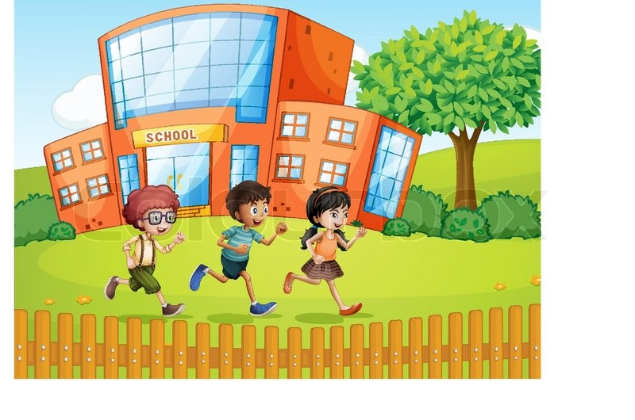

During my time in high school I had it really good moments, but my best moments that I've experienced are in a particular class during my senior year, in Sacramento, Calif. So I was basically a new student in these kind of classes and also I'm English learner. I remember my first presentation in this class. I didn't want to do it, but finally I did it and that one was my best moment. When I went to present I felt afraid, and then when I presented I felt so good for the effort I applied on. Now I feel so much better than my first day of presentations because I now know that I can do whatever I want to do. The learnings that I acquire made it so good this moment because I know that I have to trust on me. Something teachers or students can learn from my experience is that we have to overcome our fears and not let them control ourselves because we can't know our capabilities if we are afraid.